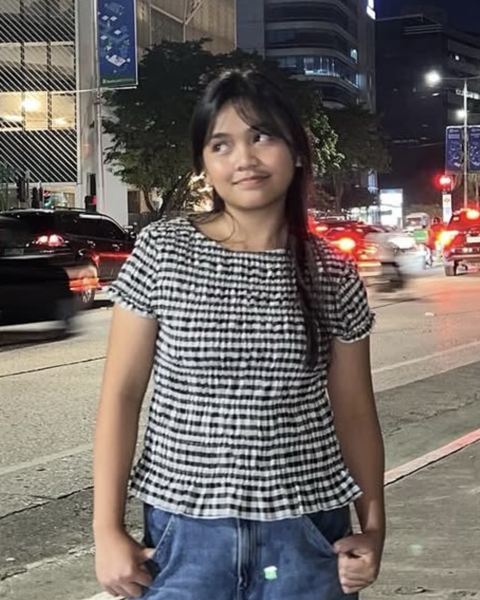
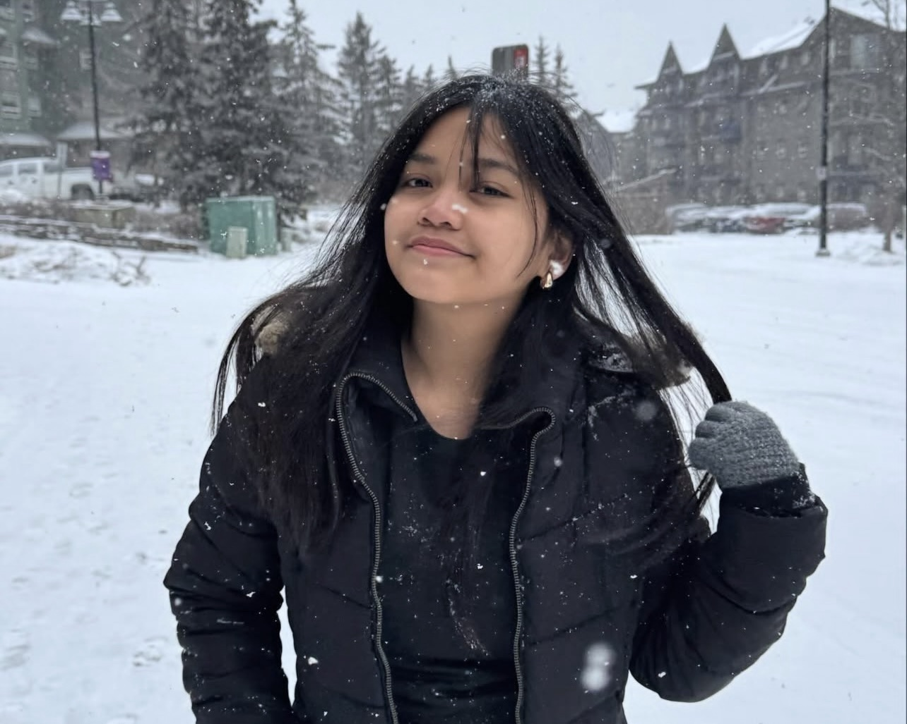
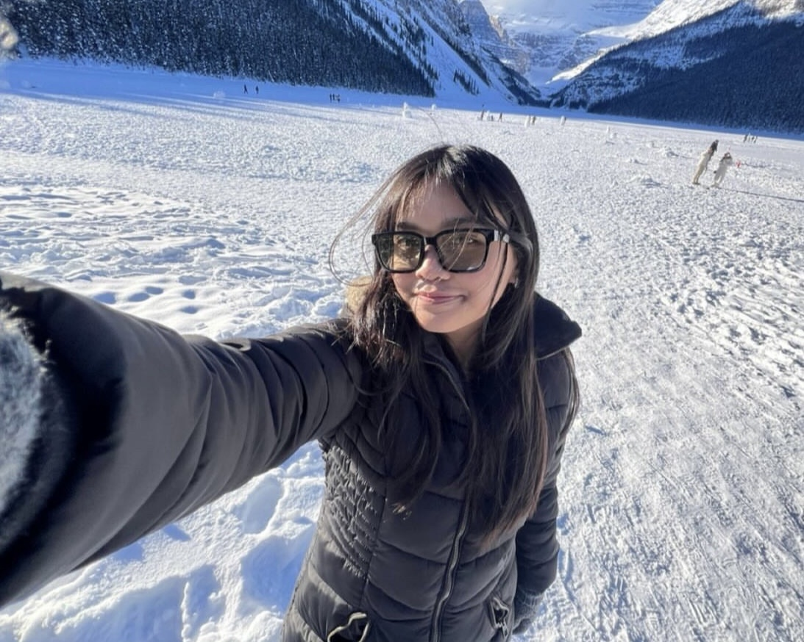

🎂
Birthday
28 October 2006 · 19 years old
CLICK TO REVEAL ↻BIRTHDAY
Growing older has made me more nostalgic about the experiences and people that shaped me.
CLICK TO RETURN ↻INTERACTIVE PROFILE LOADED
Every person is a collection of stories, dreams, memories, and little side quests. This is mine.
PLAYER 01 · BSIT–3E
Close friends call me Name. I laugh easily, observe quietly, and care deeply. I am a 19-year-old work in progress whose current mission is simple:
“To live, and not just to exist.”

CHAPTER 01 · CHARACTER LORE
I may seem extroverted because I smile and laugh a lot. Underneath that energy is someone reflective, sentimental, and occasionally embarrassed in a room full of people. I value honest feelings, meaningful communication, and the rare kind of connection that makes being understood feel effortless.
28 October 2006 · 19 years old
CLICK TO REVEAL ↻Growing older has made me more nostalgic about the experiences and people that shaped me.
CLICK TO RETURN ↻Balamban, Cebu · Where my story began
CLICK TO REVEAL ↻Familiar places, peaceful surroundings, and the people closest to me remain part of who I am.
CLICK TO RETURN ↻BSIT – 3E · University of Cebu – Main Campus
CLICK TO REVEAL ↻I have been a consistent academic achiever since kindergarten and enjoy studying when a topic genuinely captures my interest.
CLICK TO RETURN ↻Database Administrator
CLICK TO REVEAL ↻I am especially interested in SQL, database design, data organization, security, and maintaining dependable systems.
CLICK TO RETURN ↻CHAPTER 02 · MEMORY ARCHIVE
I also experienced the first snowfall of my life. Canada used to be my dream destination, and then it became a memory I could actually keep.


Scotland is one of the places I hope to visit someday. The dramatic landscapes, historic castles, old architecture, quiet towns, and stories have always fascinated me. It feels like the kind of place where every long walk reveals something worth remembering.
CHAPTER 03 · SIDE QUESTS
Every interest is less of a label and more of a doorway. Click a card to discover another layer of my world.
From Filipino novels to international stories, especially danmei novels that make me feel and think.
+20 IMAGINATIONCLICK TO EXPAND ＋What I look for: stories that stay with me, challenge my thoughts, and make me feel deeply.
Alone for clarity or with the right people for connection. Distance never bothers me, and yes, I love grass.
+25 PEACECLICK TO EXPAND ＋Preferred setting: nature, roads, or anywhere with grass.
Distance limit: apparently none.
A proud Real Madrid supporter who enjoys the emotion, tension, and story behind every match.
+15 PASSIONCLICK TO EXPAND ＋Favorite club: Real Madrid
Favorite player: Jude Bellingham
SEVENTEEN, TXT, CORTIS, and BOYNEXTDOOR. My comfort song right now is “Vienna” by Billy Joel.
+20 COMFORTCLICK TO EXPAND ＋Music gives memories their own soundtrack and has a way of making ordinary moments feel important.
Sudoku, Wordle, and trackers for books and series. I love turning ordinary life into organized progress.
+30 FOCUSCLICK TO EXPAND ＋Favorite puzzles: Sudoku and Wordle.
Secret satisfaction: watching everything become organized.
I play Genshin Impact and Honkai: Star Rail. Skill level: enthusiastic, not exceptional.
+10 FUNCLICK TO EXPAND ＋Playing style: exploring first and mastering mechanics later.
I like movies and series that make me question, notice, and keep thinking after the final scene.
+20 CURIOSITYCLICK TO EXPAND ＋I enjoy mysteries, tension, psychological depth, and endings that remain in my thoughts after the screen goes dark.
I am open about my feelings and value honest communication with people I truly connect with.
+25 CONNECTIONCLICK TO EXPAND ＋Favorite topics: life, feelings, personal growth, stories, and things people rarely say aloud.
CHAPTER 04 · GAMES FROM MY LITTLE WORLD
Try the games connected to the things I enjoy, notice, remember, and dream about.
Guess a word connected to my personality, interests, memories, or dreams.
Enter one complete guess per row. Cyan means correct place, purple means another place, and gray means not in the word.
Hint:
For the part of me that enjoys patterns, details, and figuring things out one piece at a time.
Fill the 4×4 grid using 1–4. Each number may appear only once in every row, column, and 2×2 box.
Find four groups that connect different pieces of my little world.
Select exactly four related words and submit the group. Correct groups lock into place. Four mistakes are allowed.
Mistakes remaining: 4
CHAPTER 05 · SKILL TREE
These levels represent my personal interest and enthusiasm for each field.
CHAPTER 06 · WHAT MATTERS TO ME
Beyond hobbies, skills, and memories, these are the ideas that quietly shape how I move through life.
I value conversations that feel honest and relationships where people can be fully themselves.
CLICK TO REVEAL ↻I would rather understand a few people deeply than know many people only on the surface.
CLICK TO RETURN ↻I enjoy learning because something interests me, not only because it is required.
CLICK TO REVEAL ↻Curiosity is what turns an ordinary topic into something I can spend hours understanding.
CLICK TO RETURN ↻I care more about becoming better than appearing perfect.
CLICK TO REVEAL ↻Progress can be quiet. What matters is continuing to learn from who I was yesterday.
CLICK TO RETURN ↻My goal is to live and not just exist.
CLICK TO REVEAL ↻For me, living means noticing what makes life meaningful and choosing more stories, walks, people, and moments that make me feel alive.
CLICK TO RETURN ↻FINAL CHECKPOINT · QUIZ ABOUT ME
You made it through my story. Let’s see what you remember.
FINAL CHAPTER · BEYOND THE SCREEN
I have been a consistent academic achiever since kindergarten, but grades are not the whole story. I want a life full of deep conversations, thoughtful stories, long walks, meaningful work, side quests, and people who make the distance feel lighter.
“Maybe living is simply learning to notice what makes you feel alive, then choosing more of it.”